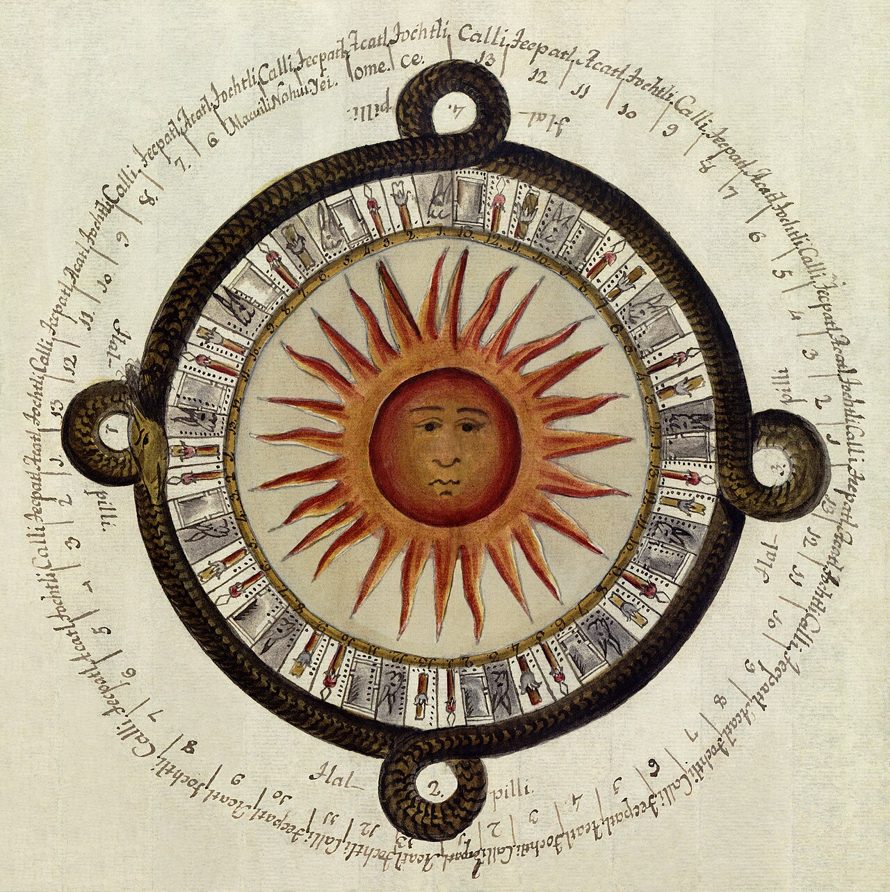
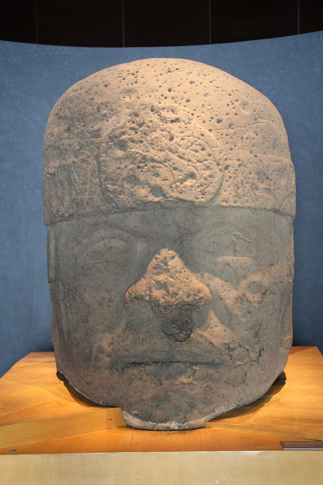
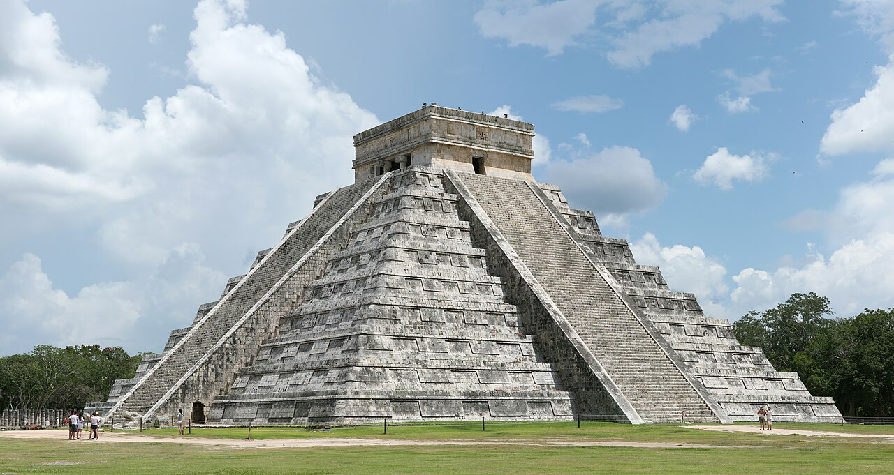
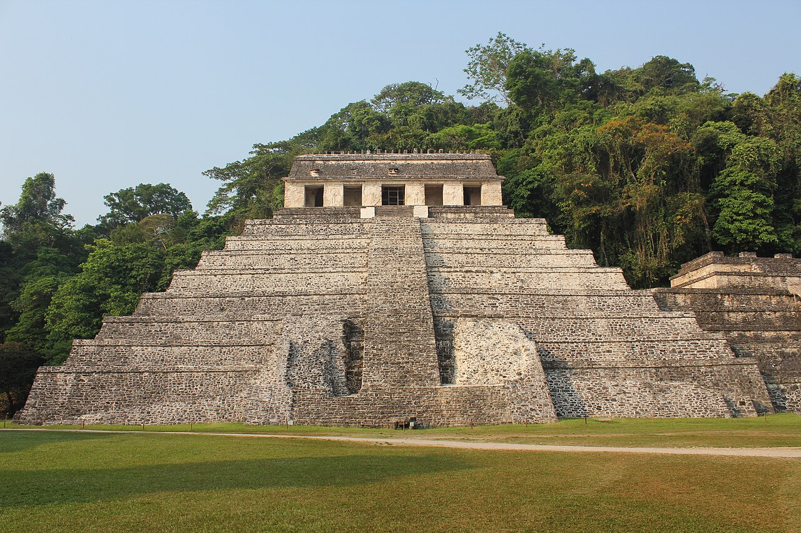
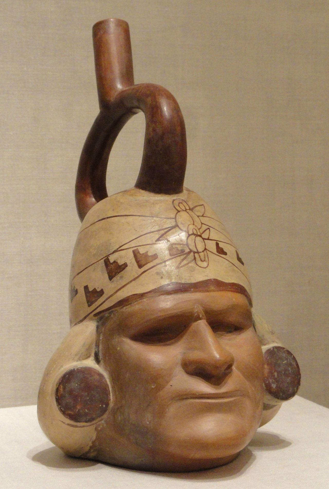
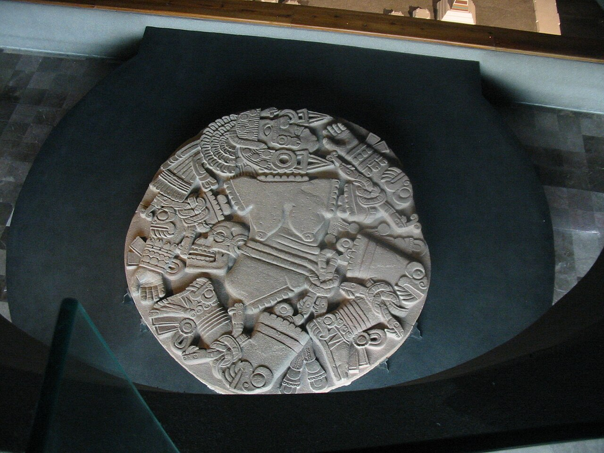
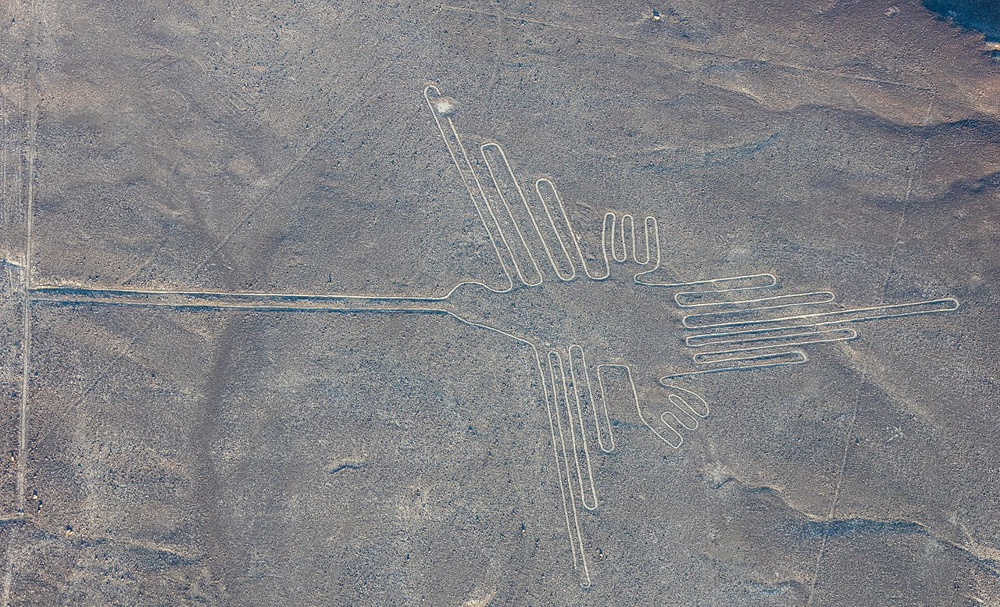
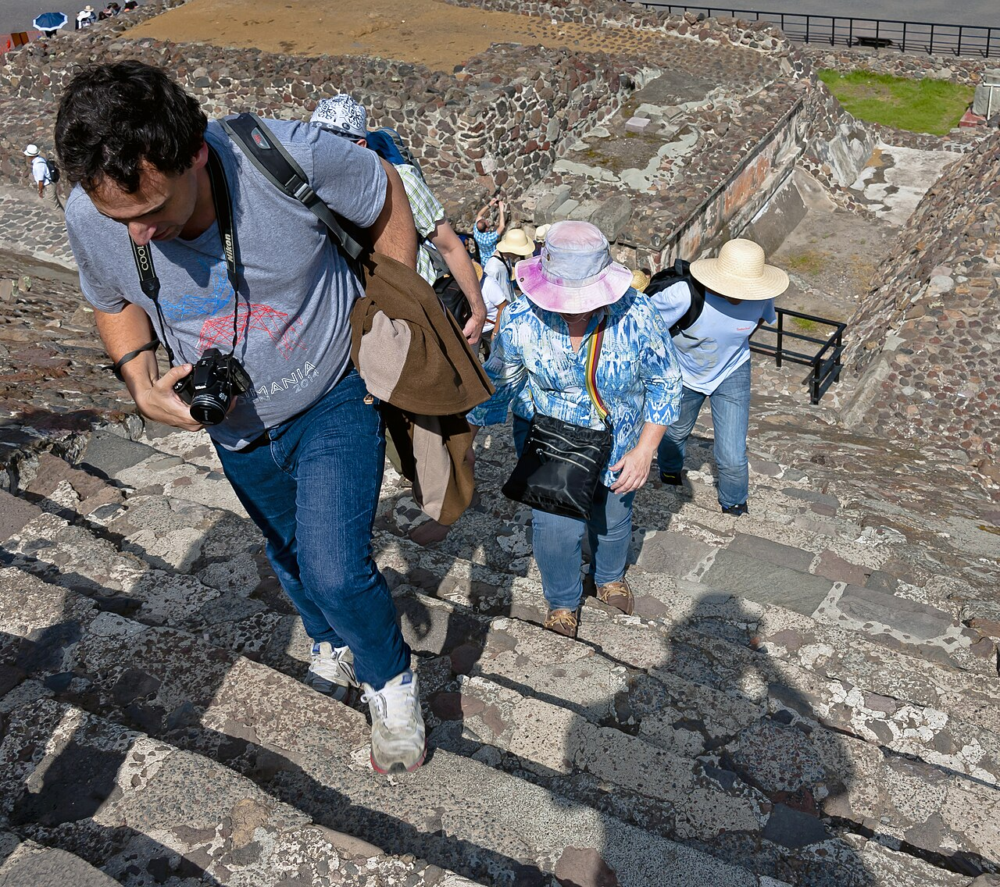
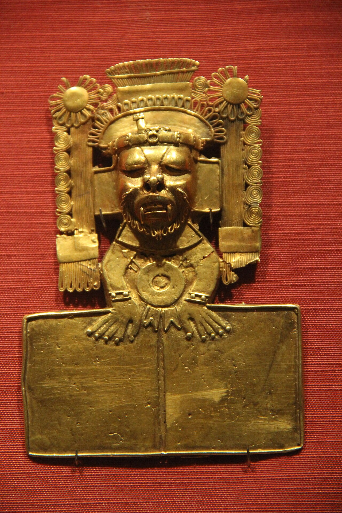
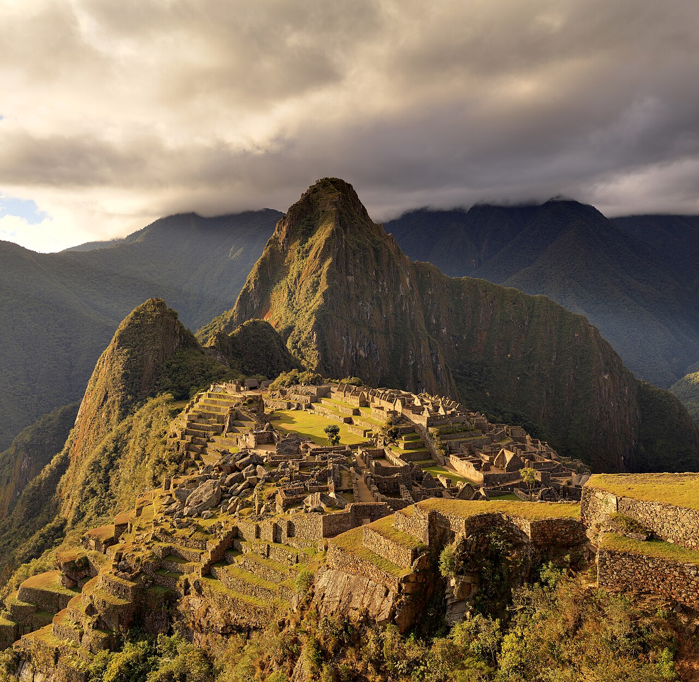

🏆 Meesterwerk: Azteekse Kalendersteen
Het beroemdste symbool van Azteekse astronomie en kosmologie - 24 ton basalt

Azteken, 1479 · Basalt · Diameter 3.6 meter · Mexico City
🎨 STIJLFIGUREN & THEMA'S
💀 Dood & Offer
Rituele kunst: Menselijke offers, doodskultus. Bloed als levenskracht voor de zon.
🐍 Godenwereld
Pantheon: Quetzalcoatl (gevederde slang), Tlaloc (regen), Huitzilopochtli (oorlog).
📊 Kalenders
Tijdrekening: Complexe kalendersystemen. 260-daagse rituele kalender, 365-daagse zonnekalender.
🧱 Architectuur
Tempelpiramides: Gelaagde structuren, trappen, altar platformen. Steen op steen.
🖼️ TOP 10 MEESTERWERKEN
1. Azteekse Kalendersteen (1479)
Azteken · Basalt · Diameter 3.6 meter · Mexico City
Achtergrond: De zonnesteen is een enorm astronomisch instrument dat de Azteekse kosmologie en tijdrekening samenvat.
🔍 STIJLANALYSE
Compositie: Radiaal ontwerp met Tonatiuh (zonnegod) in het centrum.
Symboliek: Vier vorige werelden, 20 dagtekens, Venus cyclus.
Techniek: Gesculpteerd uit één stuk basalt, 24 ton.
2. Olmeekse Colossale Hoofden (1200 - 900 v.Chr.)
Olmeken · Basalt · Veracruz, Mexico

Achtergrond: De 17 bekende kolossale hoofden zijn de meest iconische kunstwerken van de Olmeekse beschaving, de "moedercultuur" van Meso-Amerika.
🔍 STIJLANALYSE
Schaal: 1.5 - 3 meter hoog, 6-50 ton per stuk.
Realisme: Individuele gelaatstrekken, mogelijk portretten van heersers.
Techniek: Basalt van 80 km afstand getransporteerd zonder wielen.
3. Maya Tempel van Kukulcán (El Castillo) (9e - 12e eeuw)
Maya · Kalksteen · Chichén Itzá, Mexico

Achtergrond: De piramide is een astronomisch monument dat tijdens equinoxen een schaduw "slang" produceert die de trappen afdaalt.
🔍 STIJLANALYSE
Architectuur: 4 zijden, 91 trappen per zijde = 365 + platform = dagen per jaar.
Symboliek: Gevederde slang Kukulcán daalt neer tijdens equinox.
Functie: Tempel én astronomische kalender.
4. Pacal de Grote Grafmonument (683)
Maya · Jade, steen · Palenque, Mexico

Achtergrond: Het graf van koning Pacal bevat een ingewikkeld deksel dat zijn reis naar de onderwereld en hergeboorte verbeeldt.
🔍 STIJLANALYSE
Reliëf: Complex hiërogliefisch ontwerp, kosmologische symboliek.
Icoon: Pacal daalt af langs de Wereldboom naar Xibalba.
Argument: Sommigen interpreteren dit als "ancient astronaut" - maar het is kosmologisch.
5. Moche Portret Vaas (100 - 800 n.Chr.)
Moche · Keramiek · Peru

Achtergrond: De Moche maakten duizenden portretvaassen met individuele gelaatstrekken - een uniek fenomeen in pre-Columbiaanse kunst.
🔍 STIJLANALYSE
Realisme: Portretten van specifieke individuen, littekens, gezichtsuitdrukkingen.
Techniek: Stemple bus en handmodellering, rood/wit beschilderd.
Functie: Ceremonieel, mogelijk elite portretten.
6. Coyolxauhqui Steen (1473)
Azteken · Steen · Mexico City

Achtergrond: Deze schijf toont de gedecapiteerde godin Coyolxauhqui, verslagen door haar broer Huitzilopochtli - mythe van de Templo Mayor.
🔍 STIJLANALYSE
Onderwerp: Gedismembreerde godin met klok-ornamenten, schedel, slangen.
Locatie: Oorspronkelijk aan de basis van de Templo Mayor.
Mythe: Symboliseert de overwinning van de zon (Huitzilopochtli) op de maan (Coyolxauhqui).
7. Nazca Lijnen (200 v.Chr. - 600 n.Chr.)
Nazca · Aarde · Zuid-Peru

Achtergrond: Enorme geoglyphs in de woestijn - dieren, planten, geometrische vormen - alleen volledig zichtbaar vanuit de lucht.
🔍 STIJLANALYSE
Schaal: Sommige figuren 200+ meter lang, 450 km2 gebied.
Techniek: Donkere stenen verwijderd, lichte ondergrond zichtbaar.
Doel: Rituele paden, astronomische kalender, of aanbidding vanuit de lucht?
8. Teotihuacán Zonnepiramide (100 - 200 n.Chr.)
Teotihuacán · Steen, pleister · Mexico

Achtergrond: De Zonnepiramide is het grootste gebouw van Teotihuacán, de grootste stad van het pre-Columbiaanse Amerika.
🔍 STIJLANALYSE
Afmetingen: 65 meter hoog, 225 meter breed aan de basis.
Oriëntatie: Uitgelijnd met astronomische fenomenen.
Betekenis: Centrum van de scheppingsmythe, "plaats waar goden werden geschapen".
9. Mixtec Goudsmeedkunst (13e - 15e eeuw)
Mixtec · Goud · Oaxaca, Mexico

Achtergrond: De Mixtec waren meesters in goudsmeedkunst. Hun werk inspireerde de Spaanse veroveraars tot de mythe van El Dorado.
🔍 STIJLANALYSE
Techniek: Cire perdue (verloren was), hameren, filigraan.
Onderwerpen: Dieren, goden, geometrische patronen.
Status: Grafgeschenken voor elite, meest gesmolten door Spanjaarden.
10. Inca Machu Picchu (15e eeuw)
Inca · Steen · Peru

Achtergrond: Machu Picchu is een Inca citadel op 2430 meter hoogte, gebouwd als koninklijk landgoed of religieus centrum.
🔍 STIJLANALYSE
Architectuur: PolYGONAAL metselwerk zonder mortier - stenen passen perfect.
Integratie: Harmonie met het landschap, terrassen voor landbouw.
Ingenieurswerk: Seismisch bestendig, geavanceerd drainagesysteem.
📚 TIJDSGEEST CONTEXT
🌍 POLITIEK PERSPECTIEF
De politieke organisatie van Pre-Columbiaanse beschavingen was diep verweven met religieuze autoriteit en tempelarchitectuur. De Maya-theocratieën verwerpen een strikt scheiding tussen kerk en staat – koningen waren direct verheven tot goddelijke status en fungeerden als priesters. De beroemde Tempel van Kukulcán in Chichén Itzá (10e-13e eeuw) is meer dan een tempel; het is een meesterlijk staaltel van politieke machtsprojectie. De doorzichtige astronominische constructie van deze piramide fungeert als een goddelijke kalender: elke dag en maand hebben een specifieke rituele betekenis, wat de koning als representant van de goden positioneert. Het ritueel van de Equinox-springende slang – waarop het zonlicht de piramidetrap oprijst als een slangenlichaam – visualiseert de koninklijke macht om tijd te manipuleren en astronomische cycli te controleren.
De Azteekse imperialisme (14e-16e eeuw) benadrukte ook de rol van mensenoffers in politieke legitimatie. Het Templo Mayor van Tenochtitlán was niet slechts een religieus centrum, maar het hart van een wereldrijk dat miljoenen mensen afhankelijk maakte van de Azteekse elite. Het offer van talloze offers tijdens de belangrijkste ceremonies was politiek geregisseerd: het weerspiegelde de imperialistische expansie, oogstbronnen en diplomatieke relaties. De Codex Mendoza (1553) documenteert dit – een Azteekse geschiedenisboek dat door Spaanse functionarissen werd gemaakt – waarop vermeld staat hoe Azteekse legers tribuut eisten van miljoenen onderdansen, waarbij offers werden gebruikt om het hemelse en aardse evenwicht te herstellen na elke overwinning.
De Inca-rijk (15e-16e eeuw) ontwikkelde een uniek systeem van politieke centralisatie zonder geschreven teksten. De Inca-koningen, de Sapa Inca (enige Inca), werden gezien als zonen van de zonsgod Inti. De Convent van Sacsayhuamán bij Cusco toont de enorme schaal van deze politieke projectie: gigantische stenenblokken (tot 125 ton) werden zo verwoestend gepast dat ze zonder mortel staan. Deze architectuur visualiseert de macht van het Inca-rijk – het is geen fort, maar een statement van onoverwinnelijke orde. De politieke ideologie werd verspreid via de quipu (knooppuntstelsels), die de belastingverplichtingen van miljoenen onderdanen documenteerde. Hoewel deze systemen gebaseerd waren op orde en organisatie, waren ze extreem kwetsbaar: de komst van Spaanse conquistadores in 1532 maakte razendsnel een einde aan dit systeem.
De Spanjaarden zagen deze politieke structuren niet als 'godsdienstig', maar als 'barbaars' en ondermijnden ze direct. De verwijdering van Maya koningen (1536-1547) – waarbij de laatste Maya heerser, K'inich Kan Balam II, werd geëxecuteerd – markeerde het einde van Maya-theocratieën. De ontmanteling van tempels in Chichén Itzá en Uxmal werd gebruikt om de politieke legitimatie van Maya-koningen te breken. De Spanjaarden bouwden christelijke kerken op de fundamenten van oeroude tempels, wat een directe politieke boodschap was: de nieuwe goden (Christus) waren sterkere macht dan de oude goden (Kukulcán, Quetzalcoatl). Dit politieke verwoesting van de oude orde was cruciaal voor de Spaanse overheersing.
De Azteekse diplomatieke strategie omvatte diplomatieke huwelijken tussen koninklijke families, wat de politieke allianties formaliseerde. Het kerstoffer van wezens (honden, vogels, bloemen) aan de Azteekse goden tijdens vredesverdragen was politiek: het onderstreepte dat de Azteken de brug waren tussen de menselijke wereld en de goddelijke wereld, en dat vrede alleen kon worden bereikt als de goden tevreden waren. Dit politieke religieus beleid zorgde voor decennia van imperialistische expansie, maar ook voor bittere vijandigheid. De Spaanse conquistadores maakten hier volop gebruik van: ze benadrukten de bloedigheid van Azteekse offers als bewijs van hun 'barbaarse' status, wat hen in staat stelde een 'beschaving' te claimen tijdens hun verovering.
📚 LITERAIR PERSPECTIEF
De Popol Vuh (Het Boek van de Gemeenschap) – het scheppingsverhaal van de Maya – vormt de ruggengraat van Pre-Columbiaanse literatuur. Deze tekst, bewaard door Dominicaner monniken, beschrijft hoe de oorspronkelijke goden Tzitzimime de wereld 'vuilden' en hoe de nieuwe goden (Hunahpú en Xbalanqué) de wereld overwonnen. Het verhaal wordt direct geïllustreerd in Maya-reliefs en kunstwerk – de vechten van de Tzitzimime wordt bijvoorbeeld gefragmenteerd in beelden op tempelpartijen. Het verhaal functioneerde als historisch en religieus document, niet als fictie: het legitimeerde de Maya-heersers als de nakomelingen van de overwinnaars en gaf een morele richting aan politieke beslissingen.
De Codices van de Maya, Azteken en Mixteken waren niet 'boeken' in de Westerse zin, maar doorloopbare pergamenvouwen die werden gebruikt voor astronomie, kalenders, geneeskunde en geschiedenis. De Maya-Codex Dresden bevat een astronomische tafel die honderden jaren nauwkeurig voorspelt zons- en maansverduisteringen. Deze teksten zijn cruciaal voor politieke legitimatie: ze demonstreerden aan de bevolking dat de koningen de astronomische cycli kenden en konden voorspellen. De manieren waarop de Maya koningen in hun tempelreliefs hun namen zetten – vaak met hun bijnamen (titels) en dynastieke information – vormen een visuele geschiedenisboek dat alle belangrijke gebeurtenissen documenteert.
Orale tradities bleven de belangrijkste overleveringsbron voor de Azteken. De Aztekische geschiedenis werd verteld door priester-historici, die de legende van Quetzalcoatl – de god van wind en vruchtbaarheid die vertrok richting het oosten – interpreteerden als een verzekering van komst. De Spaanse conquistadores, die Quetzalcoatl herkenden als Hernán Cortés (omdat ze dezelfde gelijkenis en 'komst' claimden), werden ontvangen als bevrijders. Dit verhaal, bewaard in orale tradities en historische verhalen, had directe politieke gevolgen: het legitimeerde de Spaanse verovering en werd gebruikt om de Mexicaanse bevolking overtuigen.
De hiërogliefen van de Maya functioneren als een schrijfstelsel dat direct verhalen en ideeën visualiseert. In de Tikal-tempel III (8e eeuw) wordt een koninklijke intrige uitgebeeld: een prins wordt gevangengenomen door rivaliserende koningen. Deze reliëfs zijn geen esthetische toespelingen, maar politieke berichten die in het openbaar werden getoond tijdens ceremonies. De Maya hadden geen 'gesloten' literatuur – alle kennis was publiek en deel van de politieke orde. De hiërogliefen functioneren als het 'boek' van de koning: ze verhalen zijn genealogie, overwinningen en religieuze taken.
De Spaanse verovering vernietigde de meeste pre-Columbiaanse literatuur: van de oorspronkelijke 400 Maya-codices zijn er slechts vier over (Dresden, Madrid, París, México). De rest werd verbrand door Spaanse missionarissen als 'heidens'. De vernietiging was politiek: zonder geschreven teksten kon de oude politieke orde niet hersteld worden. De survivanten, zoals het Popol Vuh (vertaald in het Spaans door Franciscanussen in de 16e eeuw), vormen door deze vernietiging zelfs schaarser en belangrijker dan ze ooit zouden zijn geweest. Deze literaire traditie werd dus direct gekoppeld aan de politieke survivatie van culturen.
🧠 PSYCHOLOGISCH PERSPECTIEF
Doodscultus en mensenoffers vormden een centrale psychologische werkelijkheid voor Pre-Columbiaanse samenlevingen. Het offeren van menselijk bloed – waarbij bloed uit de tong of penis werd afgenomen met obsidiaan – was geen 'schaamteloos' of 'barbaars', maar een psychologisch proces om de goddelijke en menselijke werelden te verbinden. Het bloedoffer van de Azteekse koning tijdens de inauguration – waarbij hij zijn eigen bloed gaf als symbool van zijn offerkracht – vertegenwoordigde de psychologische lading van koninklijke macht: hij was de voorwaardelijke brug tussen goden en mensen.
De droomwereld en hallucinogene ritualen waren cruciaal voor psychologische ervaring. De Aztecisch 'Peyote' ritual (huid de droomvogel) maakte deel uit van 'Sacrificio de Tiempo' (tijdoffer) ceremonies – waarbij rituelen werden uitgevoerd om de kosmische tijd te reguleren. De Nahuatl's spirituele werkelijkheid was complex: het veronderstelde dat droombeelden directe communicatie met goden waren. De Penitentium Pelota (zuilritueel) in de tempel van Tenochtitlán vereiste dat pelotadoers (offeraren) fysieke straffen ondergingen om de droomwerelden van de goden te bereiken.
Angst en ontzag voor natuurkrachten weerspiegelde zich direct in kunst. De K'iche' keren en hun 'volk-van-den-berg' werden vertegenwoordigd als abstracte, enge beelden met opvallende ogen. Het Chichén Itzá Equinox-slang ritueel was een psychologische ervaring: de nachtelijke bewaking van de piramide met luipend vuur en tromgeroffel maakte een omgeving van intense spanning en wonderen. Het gaf de deelname de indruk dat tijd zelf werd gemanipuleerd door de goden – en de koning als hun vertegenwoordiger.
De psychologische ruimte van voorouders en goden was niet gescheiden van de menselijke wereld. De Maya-sacrifice in Tempel van Kukulcán vertegenwoordigde een fysieke brug tussen de aardse en goddelijke domeinen. Het offer was geen symbolisch verlies, maar een krachtige energetische transformatie: bloed werd direct naar de hemel gezonden en goddelijke krachten kwamen naar de aarde. Dit psychologische model verklaart waarom mensenoffers een zo cruciale rol speelden: het was de enige manier om directe communicatie met de goddelijke wereld te bereiken.
De collectieve versus individuele expressie verschilt van Westerse tradities. In Pre-Columbiaanse kunst was het individuele zelf minder belangrijk dan de gemeenschappelijke identiteit. Kunst werd niet als 'kunstenaarsexpressie' bedoeld, maar als instrument voor gemeenschappelijke ervaring. Dit manifesteerde zich in kunst die direct in politieke ceremonies werd gebruikt – de Chichén Itzá Equinox' raamloop ceremonies (figuur-fact), de Aztecisch-Sacrificio-tempel rites (offer-altaren, vuurtempel), de K'iche'-Maya bodespraak ceremonies (discussie with goden). Kunst was hier geen 'laag', maar een 'tussenvorm' voor collectieve ervaring.
📜 HISTORISCH PERSPECTIEF
De Olmeekse moedercultuur (1500-400 v.Chr.) vormt de basis van Latijns-Amerikaanse kunstgeschiedenis. De Olmeken ontwikkelden een unieke symboliek die later zou terugkeren in Maya, Azteekse en Inca-art – met name de jaguarmens en muizenoffer iconografie. Het San Lorenzo hoofd (ca. 1000 v.Chr.), met zijn gesloten ogen en strikte expressionisme, toont een psychologisch begrip van voorouders en goden dat eeuwen zou meegaan. De Olmeekse techniek van grote basaltkissen en gefixeerde steen (stapels van grote, vaak fysieke ogen en 'eerste basen') weerspiegelde een maatschappij die permanentheid nastreefde.
De Classic vs Postclassic periodes vormden een cruciale breuk in Maya-geschiedenis. De Classic Maya-periode (250-900 n.Chr.) was de gouden eeuw van Maya-kunst: de Tikal-tempels, Palenque-inscripties en Copán-reliefs tonen een ongekende artistieke complexiteit. De Postclassic overgang (900-1200 n.Chr.) bracht verandering: de stad-centrering en politieke centralisatie werden versterkt, wat leidde tot meer militaristische en offer-gedreven kunst. Dit is direct zichtbaar in de Chichén Itzá-reliefs – met hun 'Ritual-Tijds-belichaming' en 'Inhuur van Goden' die versterkt werden door Mexicaanse en 'Chichén Itzá' alveolitische styles.
De Spaanse verovering vernietigde direct de politieke orde. De verwijdering van Maya-koningen (1536-1547) tijdens de Tierra Firme-conquista maakte een einde aan Maya-theocratieën. De ontmanteling van tempels in Chichén Itzá en Uxmal werd gebruikt om de politieke legitimatie van Maya-koningen te breken. De Spanjaarden bouwden christelijke kerken op de fundamenten van oeroude tempels, wat een directe politieke boodschap was: de nieuwe goden (Christus) waren sterkere macht dan de oude goden (Kukulcán, Quetzalcoatl). Dit politieke verwoesting van de oude orde was cruciaal voor de Spaanse overheersing.
Technische innovaties in metallurgie en architectuur volgden historische ontwikkelingen. De Olmekische technieken van grootschalige stenen (1500-400 v.Chr.) inspireerden later Maya, Azteekse en Inca-art. De Inca-metallurgie (15e-16e eeuw) – die brokkeling en zilververwerking beheerste – was echter uniek: het was gebaseerd op territoriums-gebaseerde 'werelden' die vertegenwoordigden door abstracte 'motief-structuur'. De Inca-architectuur (Sacsayhuamán, Ollantaytambo) combineerde technische perfectie met politieke projectie.
De historische context verklaart regionale verschillen. De Maya-rijk (Mexico, Guatemala, Belize, Honduras) was politiek gecentraliseerd met tempel-centrische architectuur. De Azteekse imperium (Mexico) was militaristisch en offer-georiënteerd. De Inca-rijk (Peru, Bolivia, Ecuador) was gebaseerd op administratieve centra en territoriums-gebaseerde wereldstructuren. Deze diversiteit weerlegt het stereotype van 'één Latijns-Amerikaanse kunst' – de continentale kunstgeschiedenis is even complex als de politieke en economische geschiedenis.
💭 FILOSOFISCH PERSPECTIEF
Kosmologie en cyclische tijdconcepten vormden de filosofische basis voor Pre-Columbiaanse kunst. De Maya-kosmologie – met haar 5 niveaus van de wereld (c0, c1, c2, c3, c4) – was direct vertaald in kunst: tempels, schrijfbalken en reliëfs waren fysieke representaties van deze niveaus. De Chichén Itzá Equinox-slang visualiseerde de verandering tussen tijd en cyclische perioden. De Aztecisch 'Sacrificio de Tiempo' was een directe fysieke actie die tijd en cycische perioden omzeilde en herdefinieerde. De Inca-rijk baseerde zijn politieke orde op het 'Inca-rijk van het Territorium' – een model van territoriums-gebaseerde werelden die cyclisch en lineair waren.
Dualisme tussen leven en dood was een centraal filosofisch thema. De Aztecisch mensenoffer-ritualen (met directe fysieke actie) waren direct vertaald in tempel-architectuur en offer-ritualen. Het K'iche'-Maya 'Volks-van-de-Berg' beelden visualiseerden dit dualisme als twee werelden die naadloos in elkaar overgingen. Het Chichén Itzá Equinox-slang ritueel was een fysieke representatie van dit dualisme: de zon moving naar beneden and terug, zoals tijd van dag naar nacht en terug.
Mensenoffers als kosmisch onderhoud was een filosofisch concept. De Aztecisch-Tlaloc-Tempel offers (met mensenoffers als fysieke actie) waren direct vertaald in tempel-architectuur en offer-ritualen. De Chichén Itzá Equinox-slang ritueel was een fysieke representatie van dit concept: de zon moving naar beneden and terug, zoals tijd van dag naar nacht en terug. De Inca-Sacred-Space architecture (Sacsayhuamán) was een fysieke representatie van dit concept: de tempel-architectuur was een fysieke representatie van kosmische orde.
Geometrische patronen als kosmische symbolen vormden de basis van veel kunst. De Inca-geometrische architectuur – met zijn 'Motief-structuur' (kantelpunten, bladeren) – was direct vertaald in tempel-architectuur en offer-ritualen. De Aztecisch 'Sacrificio de Tiempo' was een fysieke representatie van dit concept: de zon moving naar beneden and terug, zoals tijd van dag naar nacht en terug. De Chichén Itzá Equinox-slang ritueel was een fysieke representatie van dit concept: de zon moving naar beneden and terug, zoals tijd van dag naar nacht en terug.
De relatie tussen zichtbaar en onzichtbaar was centraal. Kunst functioneerde als brug tussen deze werelden. De Maya-reliefs en hiërogliefen waren fysieke representaties van dit concept: ze vertegenwoordigden goden en goddelijke werelden. De Aztecisch-Tlaloc-Tempel offers waren fysieke representaties van dit concept: ze verbinden de aardse en goddelijke werelden. De Inca-Sacred-Space architecture was een fysieke representatie van dit concept: de tempel-architectuur was een fysieke representatie van kosmische orde.
📚 CONCLUSIE: DE NIEUWE WERELD
De Pre-Columbiaanse kunst leert ons:
- Kosmologie: Cyclische tijd en vijfluik-structuren bepalen alle kunstvormen
- Offer: Mensenoffers als onderhoud van de kosmische orde
- Architectuur: Piramiden als verbinding tussen aarde en hemel
- Script: Hiërogliefen als geschiedenis, astronomie en religie verenigd
- Verovering: Spaanse destructie vernietigde eeuwen van kennis
"De goden offerden zich voor de mens – de mens offert zich voor de goden." – Azteekse wijsheid